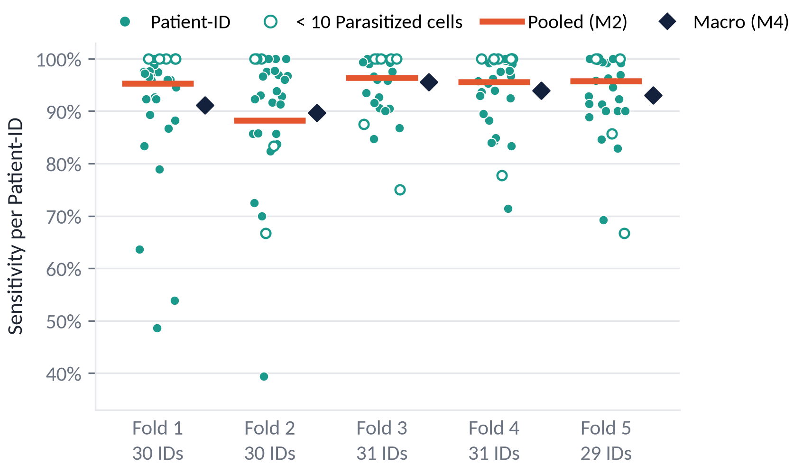
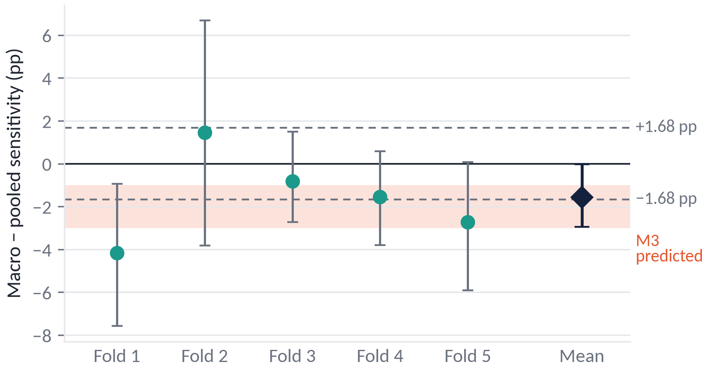
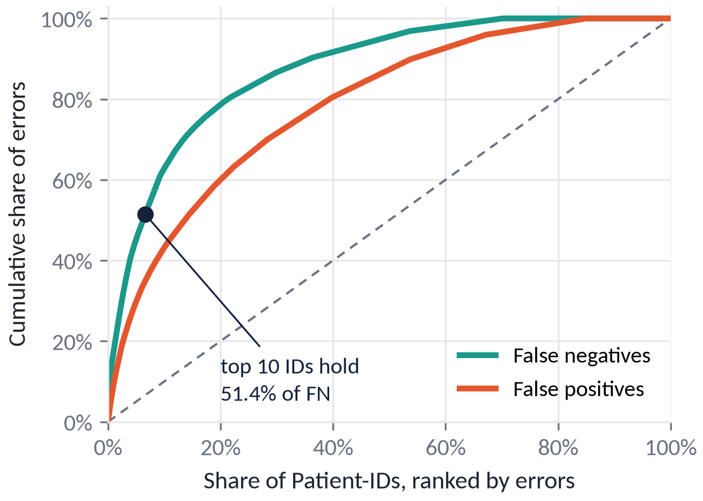
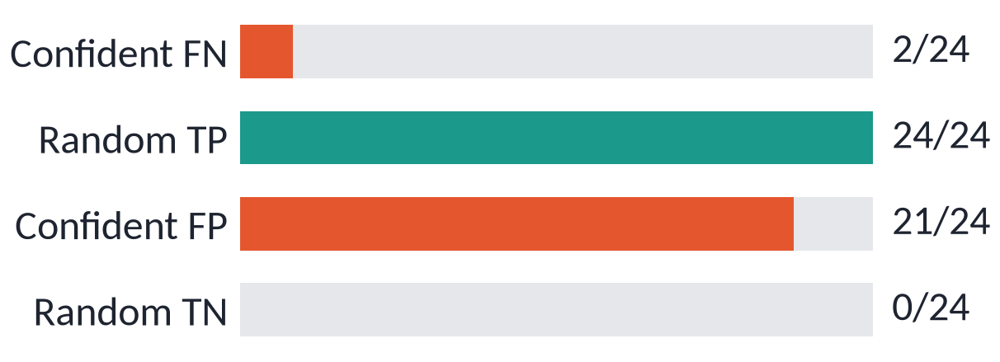

CSA431 Computer Vision · M4 + M5
Does cell-weighted sensitivity hide hard Patient-IDs?
M4: one pre-registered evaluation change, plus ablations
M5: failure analysis, IEEE paper and defence
{{html:title_cells}}
Dataset: NIH / NLM thin-smear cells, {{n_rows}} images · Base paper: Rajaraman et al., 2018, PeerJ 6:e4568
Presenters: Udita (230082) · Aman Kumar (230064)
Rishihood University
Motivation
The question M4 answers
{{pub_cell_acc}}
accuracy, cell-level split
(Rajaraman, Table 6)
→
{{pub_acc}}
accuracy, patient-level split
(Rajaraman, Table 6)
✓Same-source cells share stain, lighting and focus, so cells are not independent.
✓A pooled, cell-weighted mean can be carried by a few large Patient-IDs.
✓Course rules: predict first; report sensitivity + AUC; no clinical claims.
Open question
Under leakage-free folds, does a pooled mean hide Patient-IDs with concentrated false negatives?
Answered by re-reading the frozen M2 predictions. No new model, no retraining.
2
M2 recap
What we reproduced
{{m2_sens_mean}}
sensitivity
paper {{pub_sens}} · Δ {{delta_sens}}
{{m2_auc_mean}}
AUC
paper {{pub_auc}} · Δ {{delta_auc}}
{{m2_acc_mean}}
accuracy
paper {{pub_acc}} · Δ {{delta_acc}}
{{m2_spec_mean}}
specificity
paper {{pub_spec}} · Δ {{delta_spec}}
Frozen ResNet-50
ImageNet weights
→
2,048 features
{{cfg_image_size}}×{{cfg_image_size}} input
→
FC 2048→{{cfg_hidden_units}}→1
dropout {{cfg_dropout}}, {{cfg_epochs}} epochs
→
Threshold 0.5
Parasitized = positive
Five folds grouped by the official NLM Patient-ID key ({{n_ids}} IDs), zero train/test overlap, seed {{cfg_seed}}.
Approximate reproduction: closest on sensitivity, lower on specificity. The paper's folds, feature layer and search were not available to us. These frozen out-of-fold predictions are the only input to M4 and M5.
3
Pre-registration · 3 Oct 2026
Hypothesis and decision rule
Saved before any M4 code · first committed in {{prereg_commit}}, {{prereg_commit_date}}
IF
the frozen M2 predictions are summarised per official Patient-ID within each fold
THEN
macro sensitivity will be lower than pooled sensitivity, by about 1 to 3 pp
BECAUSE
large IDs dominate a cell-weighted mean, so hard small IDs can disappear inside it
Supported
≥ 4 of 5 folds negative and mean ≤ −1.68 pp
Unsupported
≥ 4 of 5 folds positive and mean ≥ +1.68 pp
Inconclusive
anything else, including a smaller negative mean
−1.68 pp is half the M2 sensitivity fold SD ({{m2_sens_sd}}). Macro uses the {{n_ids_pos}} IDs with Parasitized cells; the other {{n_ids_negonly}} are counted, not dropped.
4
Method · M4
One change: how the same rows are averaged

Pooled · M2
Every cell counts once:
ΣTP / Σ(TP + FN)
Macro · M4
Every Patient-ID counts once:
mean of TPi / (TPi + FNi)
✓Model, features, probabilities fixed
✓0.5 threshold, labels, folds fixed
≠Only the aggregation changes
Reuse checks PASS: {{n_rows}} rows, folds identical, pooled metrics match to {{reuse_max_abs}}
5
Primary result
Right direction, short of the threshold

Predicted (M3)
−1 to −3 pp
mean macro − pooled
Observed (M4)
{{mean_diff_pp}}
{{n_negative_folds}} of {{n_folds}} folds negative · {{within_band}} the range
Verdict · M3 rule
{{verdict}}
mean must be ≤ −1.68 pp; short by {{shortfall_pp}}
Mean: 95% cluster-bootstrap CI {{boot_ci}} · across-fold t-interval {{t_ci}} · n = 5 folds, so no significance claims
6
Ablations · exploratory
The verdict is fragile, not reversed
A1 · Weighting
= pooled
Weighting each ID by its cell count gives back the pooled value exactly: the gap is the weighting.
A2 · Eligibility
{{a2_k10_mean_n}} / {{a2_k25_mean_n}} pp
Mean with ≥ 10 / ≥ 25 Parasitized cells per ID: one variant passes the threshold, one does not.
A3 · Leave one ID out
{{a3_flips}} of {{a3_deletions}}
single-ID deletions flip the verdict: {{a3_flip_ids}}.
A4 · Cluster bootstrap
{{boot_ci}}
95% CI for the mean ({{boot_resamples}} resamples): excludes 0, includes −1.68 pp.
A5 · Specificity
{{a5_spec_mean}}
Every ID has {{nneg_min}}–{{nneg_max}} Uninfected cells, so weighting cannot move specificity.
Takeaway
Planned before computing; exploratory only.
Pre-registered verdict stands
{{verdict}}
7
Failure analysis · 1 of 2
False negatives cluster in a few Patient-IDs

{{fn_top10_share}}
of {{fn_total}} false negatives sit in the top 10 Patient-IDs; {{fn_ids_50}} IDs hold half. False positives are more diffuse (top 10: {{fp_top10_share}}).
Fold {{positive_fold}}
{{posfold_fn}} FN and {{fn_top10_in_posfold}} of the 10 worst IDs; {{posfold_top_fn_id}} alone holds {{posfold_top_fn_share}}. Large, hard IDs pull pooled below macro.
{{conf_fn_share}}
of FN are confident (p < 0.1); {{conf_fp_share}} of FP have p > 0.9. Brier {{brier}}, ECE {{ece}}.
8
Failure analysis · 2 of 2
The most confident errors may be label questions
Most confident false negatives · labelled Parasitized
{{html:fn_tiles}}
Most confident false positives · labelled Uninfected
{{html:fp_tiles}}
Official, hash-verified crops; resized, colours unaltered. p = model probability of Parasitized.
Crops with a visible stained inclusion

Blind review of {{rev_total}} crops by one non-expert reviewer (the AI assistant), categories fixed before viewing. Observation, not cause: label noise, faint parasites, border debris or reviewer error.
9
Limitations
What this result cannot tell you
1n = 5 folds
One grouping seed, so no significance claims. Fold signs could change with another grouping.
2Fragile verdict
Near the threshold; one ID or one eligibility rule moves it. Variants are not adopted.
3Patient-ID ≠ slide
An official mapping key; one source patient has two keys. Not a patient diagnosis.
4Approximate M2
Specificity {{delta_spec}} vs published; failure modes describe this model, not paper1's.
5Image review
One non-expert reviewer, small crops, errors selected by model confidence.
6Scope
One public segmented-cell dataset, no external data. No clinical claim.
10
Next steps
What we would do next
1Repeat the split
Several grouping seeds: how often does a fold flip sign?
2Expert re-review
A microscopist labels the confident errors, with inter-rater agreement.
3Stain-aware check
Do grey/blue-tinged crops come from particular slides?
4Recalibration
Only as its own change, with its own prediction.
Each step is a
new intervention
Whatever comes next: report pooled and per-Patient-ID sensitivity side by side, with the group distribution.
11
Conclusion
What M4 and M5 show
1Rajaraman's patient-level ResNet-50 baseline reproduced approximately: sensitivity {{m2_sens_mean}}, AUC {{m2_auc_mean}}.
2One pre-registered evaluation change: right direction in {{n_negative_folds}}/{{n_folds}} folds and inside the predicted range, but short of the threshold.
3Whether cell weighting hides or exaggerates hard groups depends on which groups are large. The most confident errors may be label questions.
Pre-registered verdict
{{verdict}}
mean {{mean_diff_pp}}
rule: ≤ −1.68 pp
Thank you · questions welcome
Public NIH/NLM segmented-cell data; no clinical claims · paper: paper/main.pdf
12